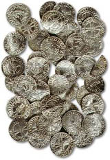

| |
The British Museum
has a legal responsibility under the terms of the 1996 Treasure Act
to process treasure finds from England and Wales. As the leading source
of numismatic expertise in this country, the Department of Coins and
Medals is actively involved in most cases where coins are recovered,
either by chance finds or archaeological excavation.
Each year the Department
deals with about 50 treasure cases, of which only the most spectacular
make the national press. Outstanding finds of gold and silver coins,
such as Hoxne (1992), Appledore (1997) and Shapwick (1998), stand out
in comparison with most hoards that consist of heavily worn and corroded
base-metal coins.
Once delivered to
the Museum, a potential treasure find may require conservation before
it can be fully identified. The identification and cataloguing process
allows the curator to advise the local coroner on whether or not a find
fulfils the definition of treasure as established by the 1996 Treasure
Act.
If a find is declared
treasure at inquest, both local and national museums have the opportunity
to acquire it. The full market value of a find, as established by the
independent Treasure Valuation Committee, is granted to the finders
and landowners in the event of its acquisition by a museum. Only in
the event of a find being declared 'not treasure', or where no museum
expresses an interest in acquiring a find, will it be returned to the
finder.
The Department of
Coins and Medals has acquired several important finds in recent years,
all of which are either displayed in the Museum's galleries or available
for study by scholars and enthusiasts alike. The Department also provides
advice to local museums hoping to purchase hoards, and has played an
important role in helping finds to be displayed in museums close to
their place of discovery, such as the Shapwick hoard, now in Taunton
Castle Museum.
The introduction
of the Treasure Act (which replaced the common law of Treasure Trove)
has led to a doubling of the number of cases each year, as a result
of the inclusion of non-precious metal finds in the definition of treasure.
At least five members of the Department are regularly involved in treasure
work.
Appledore
When a find is of national importance, the Museum will, if possible
acquire it. Appledore is an example of an unusual late Anglo-Saxon coin
hoard that challenges the chronology of coin groups from this period.
This hoard, discovered in 1997 and subsequently acquired by the Museum,
is in an extremely good state of preservation, and so allows real comparisons
between minting practices in different mint towns to be made. The Appledore
find has increased our understanding of political and economic developments
surrounding the rebellion of Earl Godwin (the father of King Harold)
against Edward the Confessor in AD 1051-2.
Hoxne
Hoxne is one of the most stunning treasures ever discovered, consisting
of more than 15,000 gold and silver coins, and over 200 pieces of precious-metal
jewellery and tableware. The hoard provides an example of the coinage
that was circulating in Britain at the time when the Roman Empire effectively
lost control of the island in the early 5th century AD. Through the
acquisition of the Hoxne treasure, the Museum has gained a visually
striking display of Roman wealth, and the most comprehensive series
of late Roman coinage ever discovered in Britain.
Hoards processed
by the Department, including those acquired by the Museum, are published,
together with others identified by colleagues in national and local
museums, in frequent volumes (see recent publications). Summaries of
finds are also published in specialist journals and the Treasure Annual
Report for the Department for Culture, Media and Sport.
The
Portable Antiquities Scheme
|
|

The
Appledore Hoard, containing over 500 Anglo-Saxon pennies, about AD 1051-52.
|
|
|
|